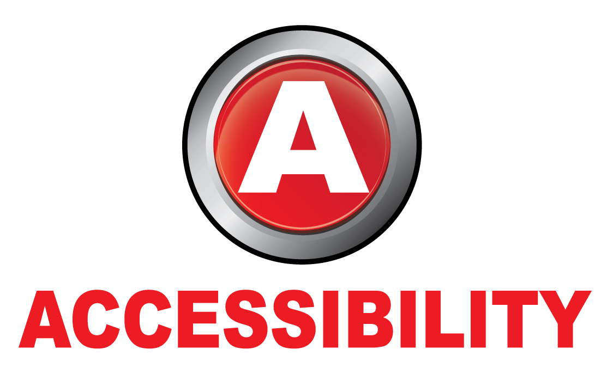

Completa tu perfil
Datos Personales
Fecha de nacimiento:
Discapacidad:
Si
No
Tipo:
Ninguno
Intelectual
Física
Sensorial
Psíquica
Grado:
Ninguno
24%
49%
74%
Nivel de estudios:
No tengo estudios
Educación Secundaria Obligatoria (ESO)
Bachiller
Ciclo Formativo de Grado Medio
Ciclo Formativo de Grado Superior
Diplomado
Graduado
Licenciado
Máster
Doctorado
Experiencia Laboral:
No tengo experiencia laboral
Sector
Ingenieros y técnicos
Atención a clientes
Comercial y Ventas
Informática y telecomunicaciones
Administración de empresas
Profesiones, artes y oficios
Administración Pública
Turismo y restauración
Sanidad y salud
Ventas al detalle
Compras, logística y almacen
Calidad, producción e I+D
Marketing y comunicación
Recursos Humanos
Educación y formación
Finaznzas y banca
Inmobiliario y construcción
Diseño y artes
Legal
Hostelería
Otros
Fecha inicio:
Fecha fin:
+
Intereses Profesionales: (Máximo 3)
Ingenieros y técnicos
Atención a clientes
Comercial y Ventas
Informática y telecomunicaciones
Administración de empresas
Profesiones,artes y oficios
Otros
Turismo y restauración
Sanidad y salud
Ventas al detalle
Compras, logística y almacen
Calidad, producción e I+D
Marketing y comunicación
Recursos humanos
Educación y formación
Finaznzas y banca
Inmobiliario y construcción
Diseño y artes
Legal
Administración Pública